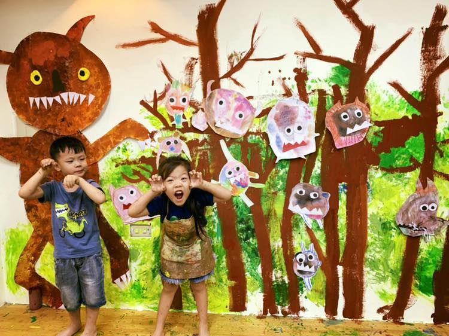
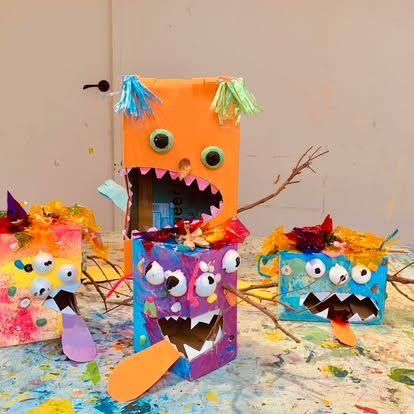
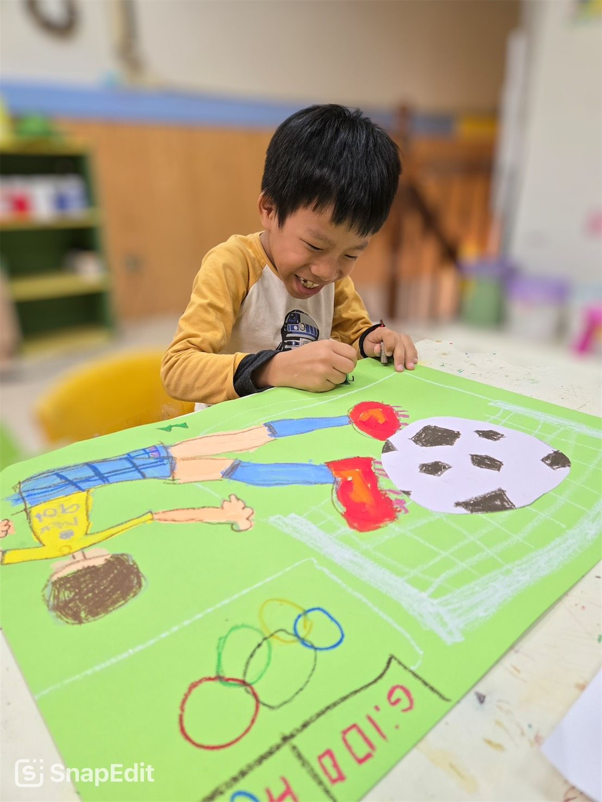

主題介紹
在變動的世界中，孩子也能擁有自己的文化視角
每一年，世界都在快速改變：從奧運、電影、動畫、科技發展到社會事件，
這些「當下的文化語言」正在悄悄形塑著孩子的世界觀。
在大綠地的「流行」主題課程中，我們不只是追流行，而是教孩子看懂流行、理解文化、從中發現自我表達的方式。
我們會挑選每年具有代表性的文化現象，轉化為創作主題，帶孩子從視覺、內容、情境三個角度切入，
讓他們用藝術的眼睛去感受這個時代正在發生的事。



在變動的世界中，孩子也能擁有自己的文化視角
每一年，世界都在快速改變：從奧運、電影、動畫、科技發展到社會事件，
這些「當下的文化語言」正在悄悄形塑著孩子的世界觀。
在大綠地的「流行」主題課程中，我們不只是追流行，而是教孩子看懂流行、理解文化、從中發現自我表達的方式。
我們會挑選每年具有代表性的文化現象，轉化為創作主題，帶孩子從視覺、內容、情境三個角度切入，
讓他們用藝術的眼睛去感受這個時代正在發生的事。
我們曾在巴黎奧運結束後，帶孩子一起認識法國文化：
我們也介紹當年度最受孩子喜愛的動畫，例如來自日本、法國、美國的作品，讓孩子：
在這個資訊爆炸、文化快速更迭的時代，孩子不能只是「看見流行」，
更需要學習「理解流行的本質」，「擁有自己的觀點與風格」。
我們設計這個主題，不是讓孩子追逐潮流，而是陪他們從流行中學會思考，從創作中找回自己的聲音。
學會用當代語言創作，也就學會了如何與這個世界溝通。